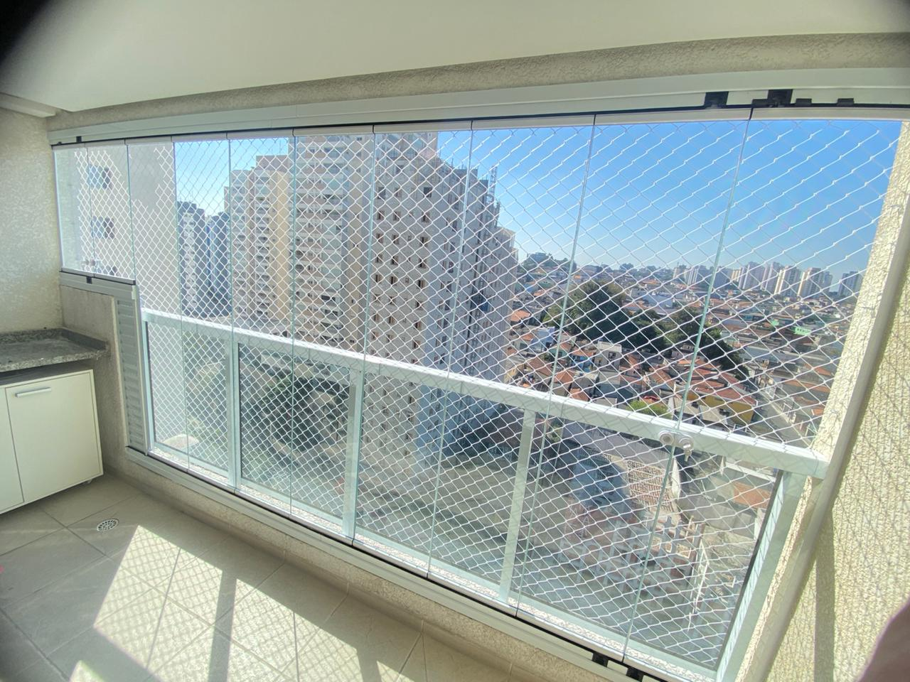
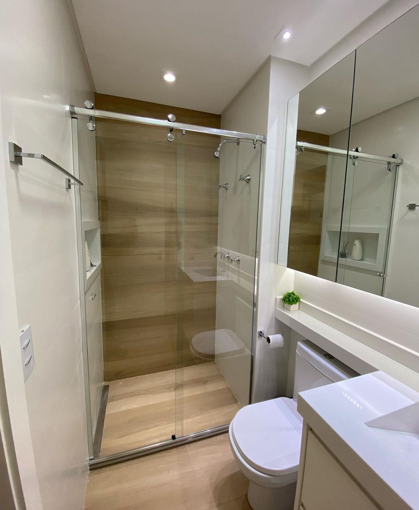
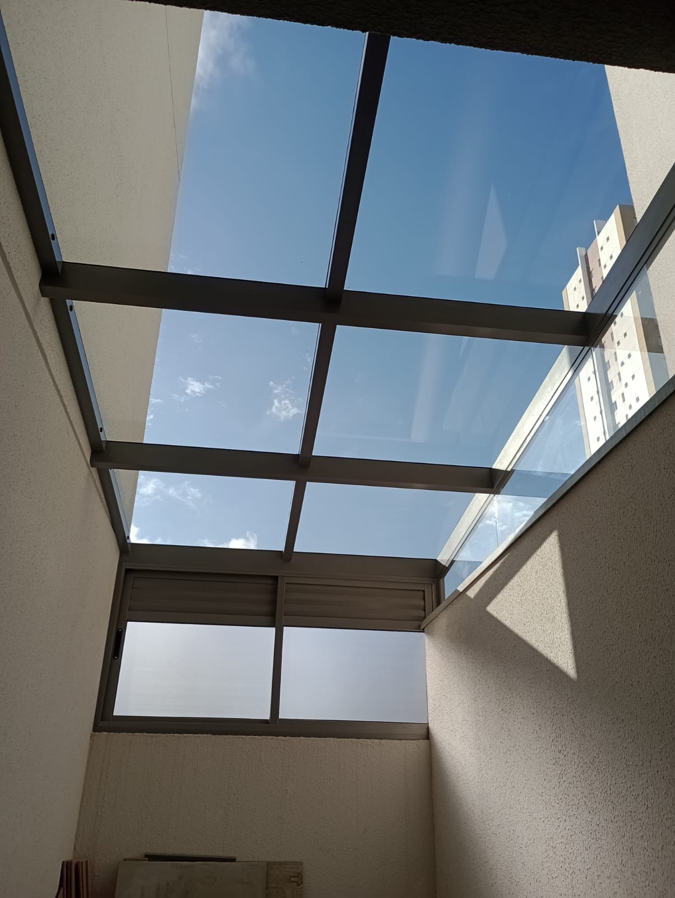

CATÁLOGO PRODUTOS

Sacada
A sacada é uma área externa do apartamento que “salta” para fora da edificação –
por conta disso, não existe sacadas em casas térreas,
apenas prédios e sobrados.
Geralmente a sacada está ligada a portas ou janelas de acesso às áreas sociais e dormitórios.
Também não é uma construção grande, mas são muito aconchegantes..

Box de vidro
Um item que jamais deverá ser ignorado na hora da aquisição de um box para banheiro é em relação ao vidro.
Este vidro tem que ser necessariamente de segurança, para não se quebrar em peças cortantes em situações de choque.
Em resumo, ele deverá ser temperado ou laminado, onde o temperado é o mais
utilizado nessas situações por ter um valor menor e por ser altamente resistente a altas temperaturas.
Se por ventura ocorrer uma quebra, o vidro temperado se quebra em muitos pedaços
não cortantes, por isso é considerado um vidro de segurança.
Lembre-se de que, o vidro temperado não pode ser furado ou cortado após sua finalização.
Porém, ele pode receber outros tratamentos como pintura ou adesivos, mas o ideal
mesmo para essa situação é que ele seja liso, para acumular menos sujeira..

Coberturas
Dispensando paredes e alvenarias, a cobertura de vidro garante uma instalação
rápida e menos custosa, amplia a área do ambiente escolhido significativamente,
além de permitir novos usos para o espaço desejado. Salas de estar, principalmente
as de apartamentos – que contam com medidas reduzidas – podem ser facilmente estendidas
com a integração com a varanda, por exemplo. Sem paredes, ganha-se amplitude e a
transparência confere ainda luminosidade e requinte.
Muito além dos benefícios estéticos e funcionais, a cobertura de vidro é também a opção
mais sustentável para essa demanda. Seu processo de fabricação não polui o meio ambiente,
além de permitir facilmente a sua reutilização ou reciclagem – que entrega peças idênticas
às que foram utilizadas em sua fabricação.
.